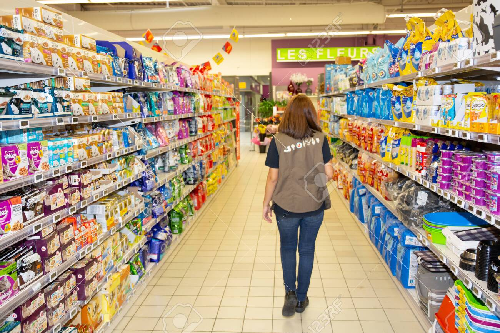
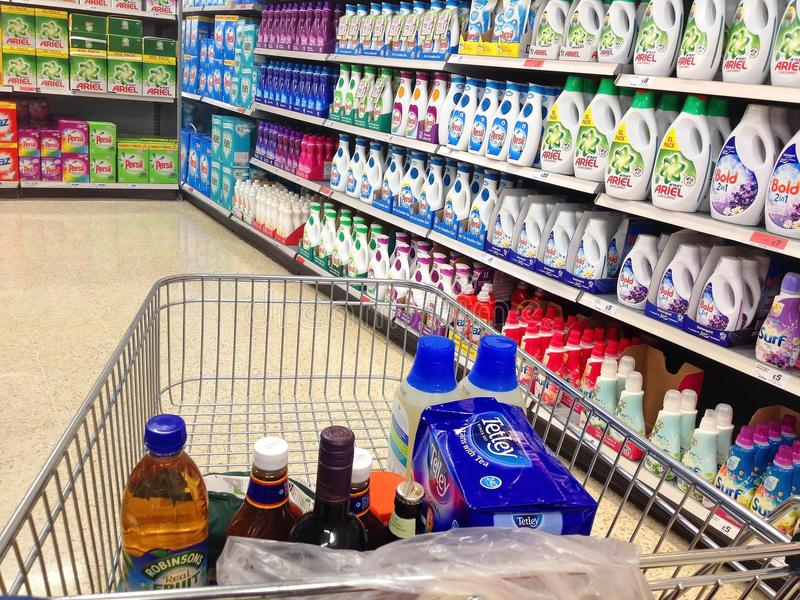

We Sell Love
Quickship Inventory for Immediate Delivery. Quality Contemporary Design Furniture for the people with discerning taste. Shop Online. Subscribe To Updates. Open Mon-Sun.We are here to 24/7
Modern and Unique

Make high quality cocktails at home with this Keurig style cocktail mixer. Once you’ve loaded up your favorite whiskey, vodka, rum, gin and tequila you’ll be making perfect cocktails in seconds.
Cheep and Pure
We only recommend products we love and that we think you will, too. We may receive a portion of sales from products purchased from this article, which was written by our Commerce team.
Easy to Buy
Buying things on the Internet, such as books, air tickets and groceries, is becoming more and more popular. Do the advantages of shopping in this way outweigh the disadvantages
About Us
We love to hear from other writers, satisfied readers, or anyone else. The best way to get in touch is to use the form below or drop a line; our address is info at paragraphline.com We love paper zines and newsletters and free books and postcards, but we don’t love paper spam from people offering to refinance our mortgage. If you’ve got some dead tree you’d like to send our way, drop us an email and we’ll give you the coordinates.